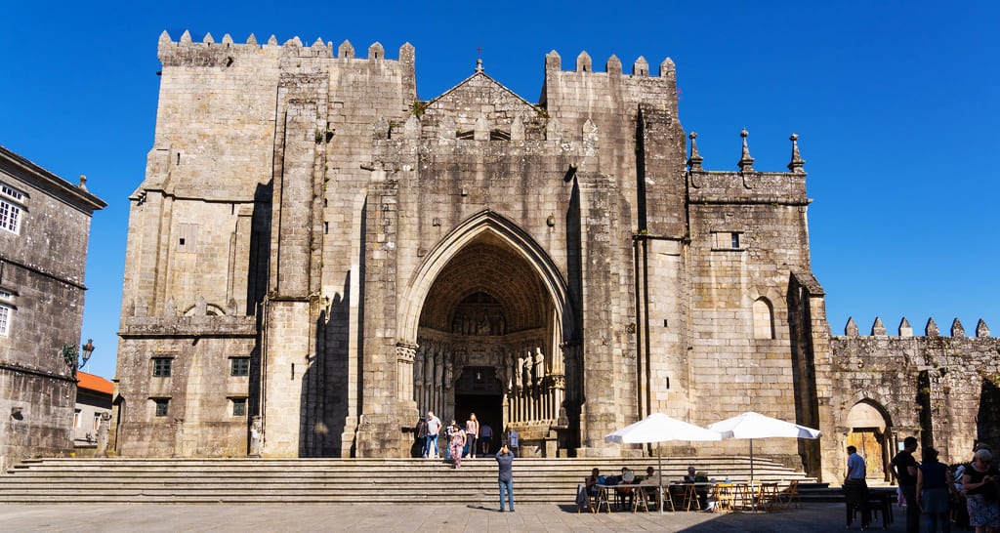
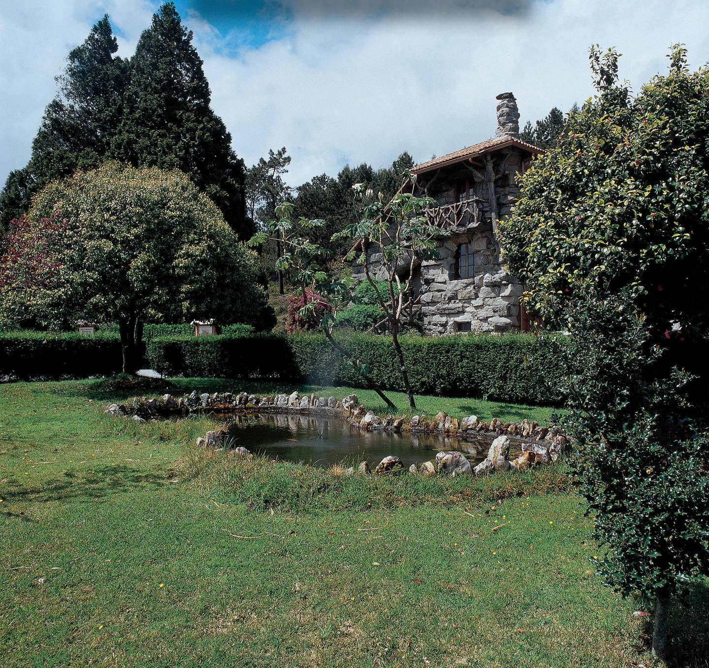
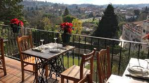
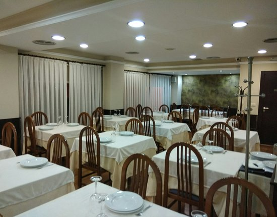

La catedral de Santa Mar? de Tuy es, junto con la concatedral de Vigo, una de las sedes episcopales de la Di?esis de Tuy-Vigo, en Galicia, Espa?. La ciudad de Tuy se localiza en el extremo sur de la provincia de Pontevedra, junto al limite con Portugal y rio Miño.
Declarado Parque Natural en 1978, el primero de Galicia, el monte Aloia es una aut?tica atalaya a 700 m de altura con 5 miradores y extraordinarias vistas sobre el r? Mi?. En el monte hay restos prehist?icos y romanos y su historia est?rodeada de leyendas. Se dice que aqu?las yeguas salvajes son fertilizadas por el viento. Tambi? que este es el m?ico Monte Medulio, escenario del suicidio colectivo de las tribus celtas antes de caer en manos de los romanos.
Parrillada y tapería ubicada en el casco histórico de Tui. Especialistas en brochetas, parrilladas de carne o pescado, pimientos de Padrón. Disponemos de terraza con grandes vistas a Valença y el Río Miño.
Si eres de carne y sabores intensos !!, este es tu sitio gran variedad en carnes y de muy buena calidad.
